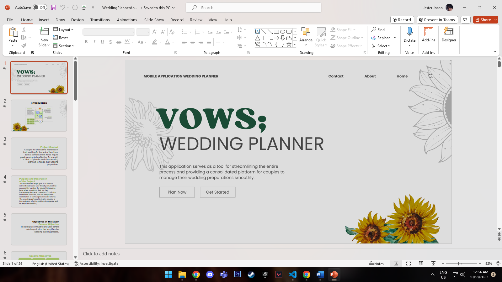

I'm a dedicated and consistent Information Technology student that just graduated this july and is looking for a full time or part time job where I can put my specific knowledge of technology to use.
I am a member of a growing ministry in our church, as well as a graphic designer for the Church Organization, where I perform graphics thumbnail and theme design.
At Church Organization
Multimedia OBS Operator, Camera Switcher & Church Graphic Designer
I have previously done commissions such as PowerPoint of students, research tasks, documentation, PowerPoint in title defense, Capstone Defense, and other academic concerns using Twitter and Facebook.

Freelance Commission
PowerPoint and Research Works
As an IT student, I find it interesting to be allocated design work for our group projects, such as logos and system assets.
School Works
Logo and System Assets
In my spare time, I used to create graphics for various persons, artists, movies, and animations, not just for enjoyment, but also to hone my skills and expertise.
Hobby
Graphic Designs
I used to do modest video editing in school, such as school projects and subtitles for academic purposes, as well as for the Church, which helped me get more editing experience.


{kind=link}
{kind=link}
{kind=link}
{kind=link}